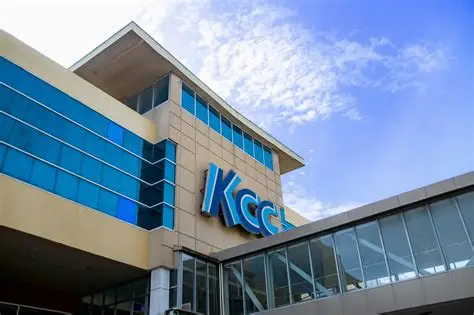
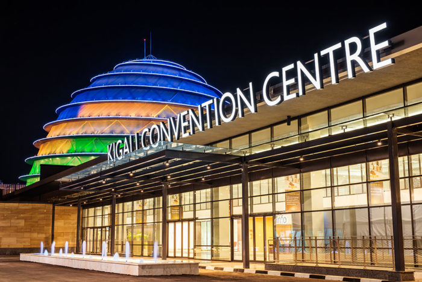

About the Kigali Convention Centre
The Kigali Convention Centre (KCC) is a landmark building in Rwanda's capital, Kigali. Opened in 2016, this architectural marvel has quickly become one of Africa's premier conference and event venues. The building's unique design, featuring a striking dome structure, represents Rwanda's forward-thinking vision and commitment to development.
Located in the Kimihurura district, the KCC complex includes a 5-star Radisson Blu hotel, office spaces, and state-of-the-art convention facilities that can accommodate up to 5,000 delegates. The venue has hosted numerous high-profile international events, including the African Union Summit and various continental business forums.
Key Features
🏛️ World-Class Facilities
State-of-the-art conference halls with advanced audiovisual technology.
🌆 Panoramic Views
Stunning 360-degree views of Kigali from the rooftop terrace.
🏨 Integrated Hotel
On-site Radisson Blu hotel with luxury accommodations.
🎨 Unique Design
Award-winning architecture inspired by Rwandan royal palaces.
Visitor Information
| Service | Details | Price (USD) |
|---|---|---|
| Rooftop Terrace Visit | Daily, 9:00 AM - 6:00 PM | $10 |
| Guided Tour | By appointment, 1 hour | $15 |
| Photography Pass | Professional photography | $25 |
| Restaurant Access | Multiple dining options | Varies |

Top 5 Things to Do at KCC
- Visit the Rooftop Terrace - Experience breathtaking 360-degree views of Kigali's rolling hills and modern skyline. Best visited during sunset for stunning photography opportunities.
- Explore the Architecture - Take a guided tour to learn about the building's innovative design, which draws inspiration from traditional Rwandan royal palace architecture while incorporating modern sustainability features.
- Dine at the Restaurants - Enjoy international cuisine at one of several on-site restaurants, including the signature restaurant with panoramic views.
- Attend an Event - Check the events calendar for conferences, exhibitions, and cultural events that are often open to the public.
- Take Professional Photos - The unique architecture and scenic backdrop make KCC one of Kigali's most photographed locations, perfect for special occasion photography.
Photo Gallery
Virtual Tour
Watch this video tour of the Kigali Convention Centre:
Note: You can also find virtual tours on YouTube by searching "Kigali Convention Centre Tour"
Location & Getting There
Address: KG 2 Roundabout, Kigali, Rwanda
How to get there: The KCC is located in Kimihurura, about 15 minutes from downtown Kigali. You can reach it by taxi, motorcycle taxi (moto), or ride-sharing apps like Yego.
Contact Information
- Phone: +250 788 199 000
- Email: info@kcc.rw
- Website: www.kcc.rw
- Social Media: @KigaliConventionCentre on Instagram and Twitter